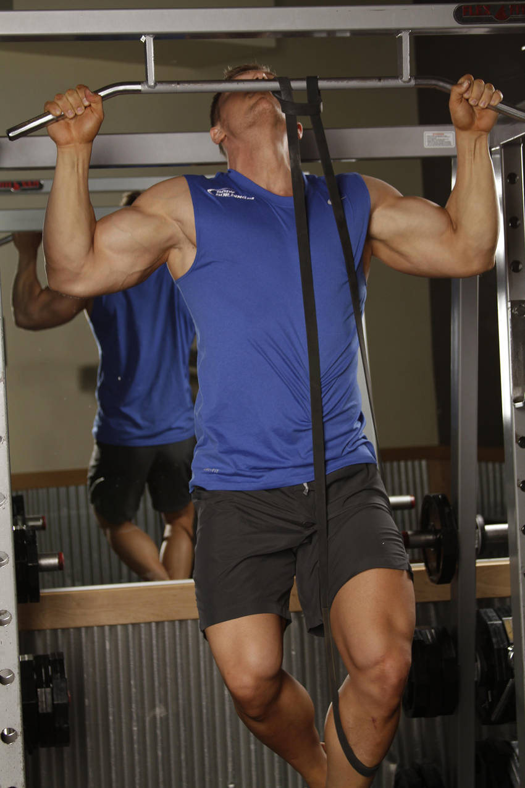

- Choke the band around the center of the pullup bar. You can use different bands to provide varying levels of assistance.
- Pull the end of the band down, and place one bent knee into the loop, ensuring it won't slip out. Take a medium to wide grip on the bar. This will be your starting position.
- Pull yourself upward by contracting the lats as you flex the elbow. The elbow should be driven to your side. Pull to the front, attempting to get your chin over the bar. Avoid swinging or jerking movements.
- After a brief pause, return to the starting position.
This exercise appears in Programmd training programs. Take the quiz to find one for your gym.
Find your program